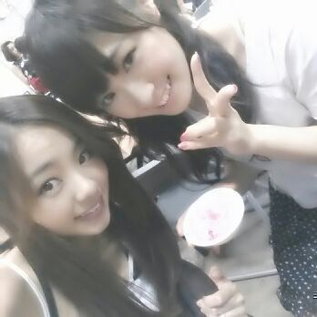
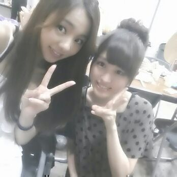
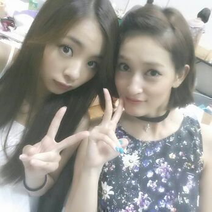

こんちゃんわぁ〜(о´∀`о)
Rotty☆だーお。
かずみとやでん♪

今はなぇ〜 取材が終わって
次まで 2時間ほど空いたから
お店入って時がたつんを
待ってるよぉ〜(*´ω｀*)
こ-ゆう時間に
まったりと ゆっくりと
blog書くんが好きなんよなぁ〜(*´ω｀*)
昨日は ちょこっと
乃木坂ってどこ？の収録を
やって参りましたー☆
研究生の子達も見学にきてました！
ってことで、握手会の時に
かりんちゃんと撮ったんやけど
まだ載せれてなかったから＼(^o^)／

・・・・・・
ちょっと、題名にも書いたけど
悩んでるんです...
聞いてくださいなぁぁ(´；ω；｀)
アイドルは自撮りってゆう、
自分で写真とって
可愛い顔とかをblogに
載せたりするぢゃん？
まひろ 自撮りが
こわくなっちゃう時あるの。
ずっと言われてたんやけど
今回 久々に実家行った時もまた
「まひろ、写真がアカン！！
もっと可愛く撮れたやつ載せーや。」
っていつも言われて
東京戻ってすぐにメンバーに相談たら
「あんたは確かに
もっと可愛く撮れる！！」
「まには、もったいない。」
「実物の方がキラキラしてる。
本当もったいないよ！」
って言われて、
実物を誉めてくれることは
本間 うれしゅうキモチやし
可愛くないです(>_<)
って感じやねんけど、
反面キモチが
『ふぁぁぁ。(´・c_・`)』って感じです。
まあ、あみ ちはる かずみ ひなに
相談したんやけどね(>▽<)
「もっと可愛く撮れるから
撮ってあげるよ！」
って言ってくれて
こないだ撮ってもらったぁ〜(*´ω｀*)
あと、blogに載せる前に
Dに確認とってから
載せなさいと...=・ω・=笑
そして きずいたの！！！
まひろのカメラは色見がないんだよ！
チークや口の色が消えちゃってるの
(´；ω；｀)
他のメンバーのカメラで撮ったら
全然 顔の色見がちゃうかったの。
みさ や せちゃんに
一緒にとってもらったりしたから
次のblogに 載せるから
比べてみてくだちぃぃ。:-<
・・・・・・
最後に 。
せっちゃんと ＼(^o^)／

絢香さんの話
次のblogに書くから
見てほちーの(.>_<)/
絢香さんは あの名曲
『三日月』の方よ(^_^)
ぢゃあねぇ〜ん )))))
のし。